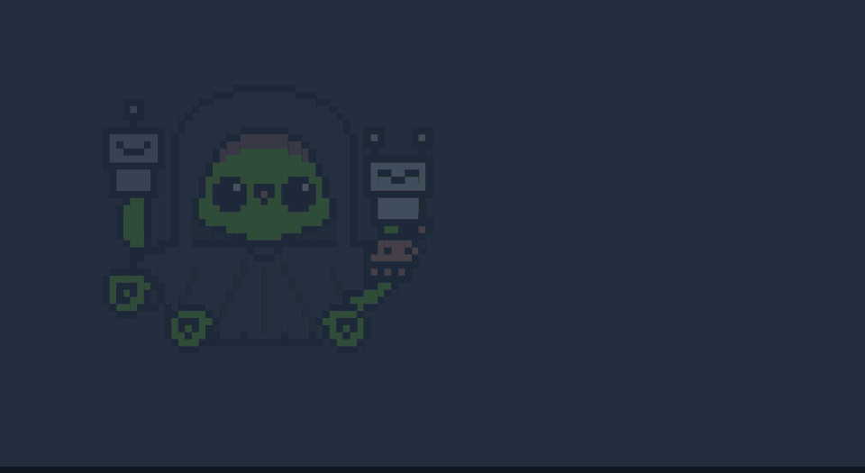
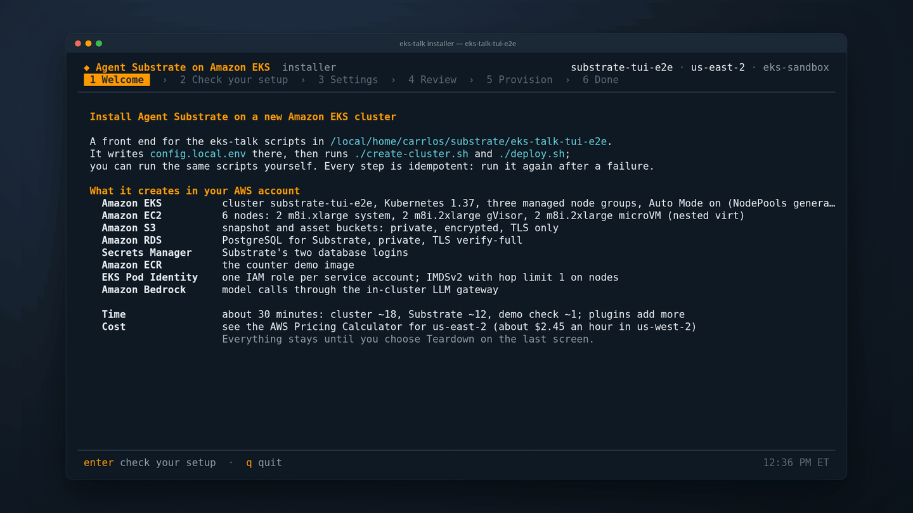

Agent Substrate Day
Running Agent Substrate
on EKS
What it takes on AWS, which services to use,
and where AWS can help the project

Agenda
- Agent Substrate and its architecture on AWS
- Cluster, gVisor, microVM, mode 3 on AWS Nitro Sandbox
- Snapshots on S3, IAM roles, state on RDS
- Secrets, Bedrock and per-actor volumes
- Two demos, lessons, production checklist
Everything shown runs on
Agent Substrate v1.0.0EKS 1.37Amazon Linux 2023 m8i (nested virt)S3RDS for PostgreSQL 18 Secrets ManagerECRBedrock EFSS3 Files
Every Service is ClusterIP: no public endpoints
Thousands of idle agents share a small pool of worker pods
One EKS cluster, three node groups, managed AWS services around it
Everything runs in private subnets, with no public application endpoints
![Agent Substrate on Amazon EKS in us-west-2: a VPC with public and private subnets; in the private subnets the EKS cluster with system, gVisor and microVM node groups running ate-api-server, ate-controller, ate-idp-server, atenet-router, atenet-egress, External Secrets with the Reloader, OpenClaw, efs-csi-controller-ate, agentgateway, atelet and worker pods; plus RDS for PostgreSQL and the rotation Lambdas; with Amazon S3, S3 Files, EFS, EBS, ECR, Secrets Manager, Bedrock, IAM with Pod Identity, CloudFormation and CloudWatch Logs.](agent-substrate-on-eks.png)
Every Substrate dependency maps to an AWS service
| Agent Substrate needs | On AWS | Status in v1.0.0 |
|---|---|---|
| PodCertificate + ClusterTrustBundle | EKS 1.37 (both GA) | works, no flags |
| Snapshot object store | Amazon S3 | works |
| microVM guest assets | S3 asset bucket | works; small patch for S3 |
| PostgreSQL | Amazon RDS for PostgreSQL | works |
| Workload identity | EKS Pod Identity | works |
| Actor image pulls | Amazon ECR | works |
| Nested virt for microVM | Intel 7th/8th gen (m8i here) | works |
| Per-actor volumes (CSI) | Amazon EFS and S3 Files | works; ExternalVolumes preview |
| Egress credential injection | AWS Secrets Manager | works |
| Metrics | Amazon Managed Service for Prometheus | ships a GKE PodMonitoring |
One node group per sandbox class, network policy on eksctl · EKS 1.37 · AL2023
apiVersion: eksctl.io/v1alpha5
kind: ClusterConfig
metadata: { name: substrate-day,
region: us-west-2, version: "1.37" }
addons:
- name: vpc-cni # + enableNetworkPolicy: "true"
- name: eks-pod-identity-agent
- name: aws-ebs-csi-driver
managedNodeGroups:
- name: system # control plane components
instanceType: m8i.xlarge
disablePodIMDS: true # IMDSv2, hop limit 1
- name: gvisor
instanceType: m8i.2xlarge
disablePodIMDS: true
taints:
- { key: ate.dev/sandboxClass, value: gvisor,
effect: NoSchedule }
- name: microvm
instanceTypes: [m8i.2xlarge]
launchTemplate: { id: lt-… } # nested virt, hop limit 1
taints:
- { key: ate.dev/sandboxClass, value: microvm,
effect: NoSchedule }- One tainted node group per sandbox class
- Turn on VPC CNI network policy
- mTLS needs no feature flags in 1.37
- Private subnets for nodes and data stores
Two sandbox classes, one cluster
gVisor · soft isolation
- Userspace kernel intercepts syscalls
- Runs on any node, no special hardware
- Native checkpoint/restore of the process tree
- Class
gvisor; default SandboxConfiggvisor-default
microVM · VM isolation
- Kata guest on Cloud Hypervisor, its own guest kernel
- Needs
/dev/kvm; atelet advertises it asate.dev/kvm - Memory snapshot, restored on demand with userfaultfd
- Class:
microvm, guest assets from S3
Same ActorTemplate shape for both. Pick per workload with sandboxClasses on the WorkerPool.
gVisor, microVM, and a 3rd mode on AWS Nitro Sandbox

An interactive installer in Go

What it adds
- Checks first: tools, account, Region, vCPU quota, nested virtualization
- Pick the cluster name, Region, node groups, demos and plugins
- Live checklist from each step's own output
- Teardown from the Done screen
setup-aws(AWS SDK) andate-setupunderneath, no shell scripts
A third mode: each worker Pod is an AWS Nitro Sandbox upstream proposal
Mode 3 runs on images from the proposal branch, ghcr.io/csantanapr/substrate. The installer turns it on.
Mode 3 on AWS Nitro Sandbox: hardware isolation per worker Pod
apiVersion: ate.dev/v1
kind: WorkerPool
spec:
networkTransport:
runtimeClassName: isolated-sandbox # from EKS Auto ModeWhy it matters
- Hardware isolation per Pod: each worker Pod is its own AWS Nitro Sandbox
- A Pending Pod is the request: Auto Mode launches an instance that fits
- VPC networking, Pod Identity and network policies work as for any Pod
- Try it: the installer's isolated-sandbox Mode 3 plugin
Nested virtualization runs microVMs without bare metal
- Recent Intel families in us-west-2:
c7im7ir7ic8im8ir8ii7ix8i - Turned on per instance with
CpuOptions - No bare metal needed for microVMs
- Check a node for
/dev/kvmandvmx
# launch template data for the microvm node group
{
"CpuOptions": { "NestedVirtualization": "enabled" },
"MetadataOptions": {
"HttpTokens": "required",
"HttpPutResponseHopLimit": 1 },
"BlockDeviceMappings": [{ "Ebs": {
"VolumeSize": 200, "Encrypted": true } }]
}
# find instance types that support it
aws ec2 describe-instance-types --filters \
Name=processor-info.supported-features,\
Values=nested-virtualization
# on a microvm node
crw-rw-rw- 1 root kvm 10, 232 /dev/kvm
kernel 6.18.56-125.164.amzn2023.x86_64Suspended actors live in S3, moved by a sidecar
objectstore-pluginsidecar moves every snapshotATE_STORAGE_BACKEND=s3with Pod Identity- Read-only asset bucket for microVM assets
Bucket best practices
Block Public AccessBucketOwnerEnforceddefault encryptionTLS-only bucket policyabort incomplete uploads
# a golden (tag) snapshot in S3
atespaces/ate-demo-counter/tags/<uid>/
manifest.json
pages.img.zstd # process memory
pages_meta.img.zstd
fs/pages.img.zstd # durable volumes
rootfs/fscheckpoint.pb.zstd
rootfs/multitar.img.zstd
rootfs/pages.img.zstd # root filesystem writes
# asset bucket (read-only for atelet)
microvm-assets/amd64/<sha256> # cloud-hypervisor
microvm-assets/amd64/<sha256> # virtiofsd
microvm-assets/amd64/<sha256> # guest kernel
microvm-assets/amd64/<sha256> # guest rootfsIdentity: EKS Pod Identity, one role per ServiceAccount
# trust policy, scoped to this account and cluster
{ "Principal": { "Service": "pods.eks.amazonaws.com" },
"Action": ["sts:AssumeRole", "sts:TagSession"],
"Condition": {
"StringEquals": { "aws:SourceAccount": "<account>" },
"ArnLike": { "aws:SourceArn": "arn:aws:eks:…:cluster/substrate-day" } } }
aws eks create-pod-identity-association \
--namespace ate-system --service-account atelet \
--role-arn arn:aws:iam::<account>:role/substrate-day-us-west-2-ateletLesson: atelet pulls actor images with its own role
ECR pull goes on atelet's Pod Identity role, not the node role
| ServiceAccount | Allowed |
|---|---|
ate-system/ate-api-server | snapshot bucket: get, put, delete, list |
ate-system/atelet | snapshot bucket: get, put (no delete) · asset bucket read · ECR pull |
llm-gateway/llm-gateway | bedrock:InvokeModel* on its pinned inference profiles |
| actors | nothing: no role, no keys, no IMDS |
Each component gets only the S3 actions it needs
Actor state lives in RDS: private, TLS verify-full, two logins
- Private subnets; 5432 only from the cluster
- Two logins: owner and readwrite
sslmode=verify-fullagainst the RDS CA bundle- Connection strings as env vars, never flags
# install: logins read from Secrets Manager
export ATE_API_POSTGRES_OWNER_CONNECTION_STRING=\
"postgres://substrate_owner_user:…@<rds>:5432/atepg\
?sslmode=verify-full\
&sslrootcert=/run/postgres-server-ca/server-ca.pem"
export ATE_API_POSTGRES_READ_WRITE_CONNECTION_STRING=…
ate-setup deploy ate-system \
--image-repo ghcr.io/agent-substrate/substrate \
--image-tag v1.0.0 \
--snapshot-location s3://<snapshots>/ \
--ateapi-postgres-server-ca-file global-bundle.pem \
--sandbox-classes gvisor,microvmRotate the DB password, and ate-api-server follows
Rotation wiring, with no change to the Substrate manifests
apiVersion: external-secrets.io/v1
kind: ExternalSecret
metadata: { name: ate-db, namespace: ate-system }
spec:
refreshInterval: 1m
secretStoreRef: { kind: SecretStore, name: aws } # Pod Identity
target:
name: ate-api-server-secret-envvars # what ate-setup made
creationPolicy: Merge # keep its other keys
template:
data:
ATE_API_POSTGRES_READ_WRITE_CONNECTION_STRING: >-
postgres://{{ .user }}:{{ .pw | urlquery }}@<rds>:5432/…
data:
- secretKey: user
remoteRef: { key: <cluster>/ate-readwrite, property: username }
- secretKey: pw
remoteRef: { key: <cluster>/ate-readwrite, property: password }
# the owner login: the same, with ate-owner
---
apiVersion: reloader.external-secrets.io/v1alpha1
kind: Config
spec:
notificationSources: [{ type: KubernetesSecret }]
destinationsToWatch:
- { type: Deployment, deployment: { names: [ate-api-server] } }Rotation
- AWS-hosted
PostgreSQLMultiUserLambda - Every 30 days, or
rotate-secretnow
External Secrets Operator
- Templates both DSNs
- Controller only: nothing listening
ESO Reloader
- Rolls ate-api-server on Secret change
Actors use API keys they never hold
Actor secrets: the wiring and its three gates
# EgressPolicy on the actor
rules:
- https:
hostnames: ["api.github.com"]
effects:
replaceHeaders:
- header: Authorization
prefix: "Bearer "
credentialUri: ate-secret://secretsmanager.amazonaws.com/
accounts/<id>/regions/us-west-2/
secrets/ate/team-a/github/stages/AWSCURRENT
---
# provider policy: atespace -> secrets, default deny
policies:
- atespace: team-a
allowedSecrets:
- { account: "<id>", region: us-west-2, namePrefix: ate/team-a/ }Three gates
- mTLS: only atenet-egress may ask
- Provider policy per atespace
- IAM:
ate/*, tagate.dev/injectable
On EKS
- Pod Identity role, no keys
Rotation
AWSCURRENTcached 30s, no redeploy
Actors reach Bedrock through a gateway, with no AWS credentials
Lesson: block IMDS for pods
Set disablePodIMDS: true (hop limit 1) on every node group, so the gateway signs with its own role, never the node instance role.
Why a gateway, not header injection
SigV4 signs each request's body hash, so signing lives in a proxy that holds the role.
Per-actor EFS volumes follow the actor to any zone CSI · ExternalVolumes preview
EFS wiring, and an actor moving between zones
# StorageClass: one access point per actor
provisioner: efs.csi.aws.com
parameters:
provisioningMode: efs-ap # s3files-ap for S3 Files
fileSystemId: fs-…
directoryPerms: "700"
uid: "<uid>" # EFS_UID: the actor's user
gid: "<gid>"
basePath: /ate
---
# CSIDriverConfig: ate-api-server finds the controller
driverName: efs.csi.aws.com
controllerEndpoint:
tcp://efs-csi-controller-ate.kube-system.svc…:50052
tls:
enabled: true
usePodIdentity: true
serverName: efs-csi-controller-ate.kube-system.svc
---
# ActorTemplate
volumes:
- name: data
external: { template: { capacityBytes: 1073741824,
storageClassName: efs-ate } }
containers:
- volumeMounts: [{ name: data, mountPath: /home/counter }]| Storage | Sandbox | Zones |
|---|---|---|
| EFS | gVisor | us-west-2c → us-west-2b |
| EFS | microVM | us-west-2a → us-west-2b |
| S3 Files | gVisor | us-west-2b → us-west-2c |
| S3 Files | microVM | us-west-2b → us-west-2a |
A captured run: same access point, new zone
Best practices
- Give the access point the actor's uid
- Run actors as non-root
Demo: suspend frees the worker, and every count keeps going gVisor and microVM
Watch for
- Counts in memory, a file and rootfs: 3, 3, 3
- Suspend:
SUSPENDED, the worker is free - Next request resumes it: all three read 4
kubectl ate create actor demo-gvisor \
-a ate-demo-counter --template counter
kubectl ate proxy actor demo-gvisor \
-a ate-demo-counter 8001:80 &
curl localhost:8001
kubectl ate suspend actor demo-gvisor -a ate-demo-counter
curl localhost:8001 # resumesCondensed from a run of this demo on the cluster above
Demo: an always-on agent that sleeps between messages OpenClaw
- An always-on gateway holds the chat channel
- Each agent is a suspendable actor
- It thinks with Bedrock and holds no keys
Watch for
- The actor answers, then suspends to S3
- The next message wakes it from its snapshot
- A new conversation gets a new actor
Flow
chat message → gateway → atenet-router → actor →
atenet-egress → LLM gateway → Bedrock → reply
Condensed from a run of this demo on the cluster above
What works on EKS today, and the rough edges
Works with v1.0.0
- Published images on stock EKS 1.37 and AL2023
- gVisor and microVM suspend and resume
- S3, RDS, ECR and Bedrock with Pod Identity
- Actor secrets injected from Secrets Manager
- Per-actor EFS and S3 Files volumes (preview)
Rough edges
ate-setupassumes GKE for any real cluster- S3 uses the pod's role, not per-actor tokens
- RDS needs a role grant before
setup.sql - DB password rotation needs a rolling restart
- EFS needs a second CSI controller
Where AWS can help the project next
Neutral install seams
ate-setup deploy --component: one piece at a timeate-setup render: manifests to your own tooling
Per-actor AWS access
- Per-actor S3 credentials for snapshot transfers
- Actor JWT to AWS token exchange
Plugins and drivers
- Secrets Manager provider in the plugins repo
- Password file for the database logins
- EFS CSI endpoint Substrate can call
Production checklist for EKS
Cluster
- EKS 1.37+
- Node group per sandbox class, tainted
- Nested-virt Intel (m8i, c8i, r8i, 7i) for microVM
- VPC CNI network policy on, IMDSv2 hop limit 1
Data
- S3: private, TLS-only, encrypted, lifecycle
- Separate read-only asset bucket
- RDS private, verify-full, owner/readwrite split
- DB logins rotated, synced, rolled out
Identity & access
- Pod Identity role per ServiceAccount
- No credentials in actors
--ateapi-authz-bootstrap-owners: your operators- ClusterIP only, private EKS API endpoint
Thank you
Agent Substrate runs on EKS today.
Help us make it boring:
plugins, neutral install seams, per-actor credentials.
github.com/agent-substrate/substrateagent-substrate-plugins
github.com/csantanapr/eks-agent-substrate